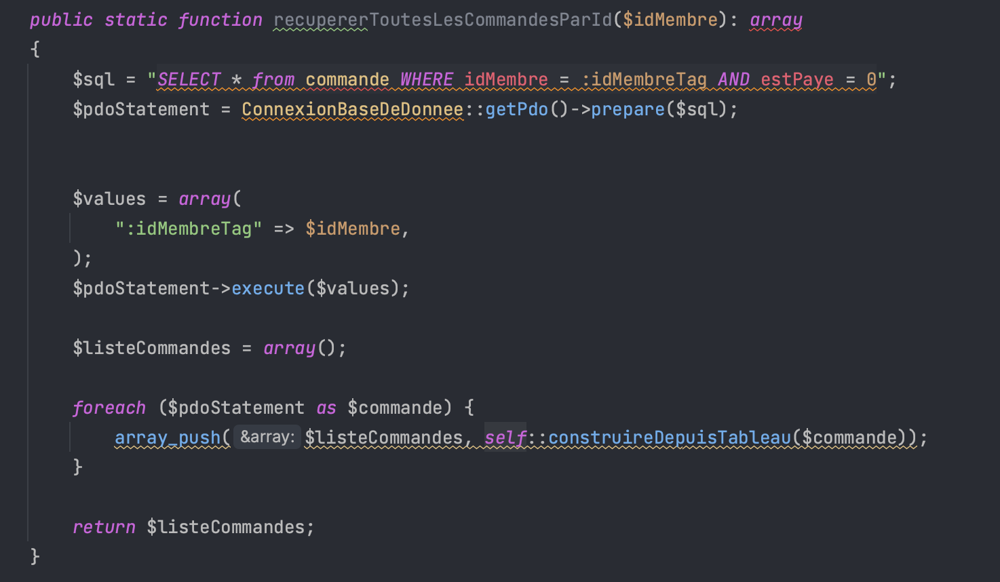

Cette compétences en quelques mots
La compétence "Optimiser" du parcours B en B.U.T. Informatique vise à maîtriser la conception d'applications informatiques en adéquation avec des critères de performance spécifiques tels que l'efficacité en temps d'exécution, la précision et l'économie des ressources. Elle implique d'améliorer la performance des programmes dans des contextes contraignants, de réduire l'impact environnemental des applications et de déployer des solutions à la fois adaptées et efficientes. Cette compétence se construit à travers une montée en complexité, débutant par la compréhension et la construction d'algorithmes simples, puis évoluant vers le choix et l'application d'algorithmes plus sophistiqués et de structures de données complexes pour répondre de manière optimale aux problèmes posés, en tenant compte de la sécurité des données et des impacts environnementaux et sociaux.
Composantes essentielles
CE2.01 | en formalisant et modélisant des situations complexes
L'architecture d'un système d'information complexe, telle qu'un site e-commerce, nécessite une planification méticuleuse et une représentation précise des processus et entités qui le composent. En
intégrant et modélisant ces éléments via des schémas UML, on peut capturer l'essence des interactions et des fonctions cruciales du système. Cela forme la base pour construire et maintenir une plateforme robuste et évolutive. La trace suivante illustre cette pratique à travers le développement du site Kiakradel, en mettant en lumière la compétence à concevoir une infrastructure logicielle qui non seulement répond aux exigences techniques, mais aussi s'aligne avec les objectifs stratégiques du commerce en ligne.
Trace n°1 - Schéma UML du site e-commerce Kikaradel
Le schéma UML pour le projet Kikaradel incarne l'excellence en matière de modélisation de données, une compétence affinée grâce à des cours approfondis sur les bases de données et la conception de systèmes. La structuration logique et la normalisation des entités (par exemple, `Utilisateur`, `Produit`, `Commande`) reflètent une application directe des principes de conception de bases de données, tels que l'intégrité référentielle (relations entre `Utilisateur` et `Commande`), les relations d'entités (associations `Produit-Commande`) et la minimisation de la redondance des données. L'intégration de ces principes théoriques a été essentielle pour parvenir à une représentation qui non seulement décrit avec précision les complexités du site e-commerce, mais qui facilite également son évolutivité et sa maintenabilité.
En utilisant des techniques de modélisation enseignées, comme l'identification des classes, la définition des attributs (`nom`, `prix`, `description` pour `Produit`) et la délimitation des associations (associations `Utilisateur-Produit` pour les avis), j'ai pu établir un schéma UML qui optimise la récupération et la gestion des données, un pilier fondamental dans le développement de systèmes informatiques performants. La précision du schéma illustre une compréhension profonde des requêtes et des transactions typiques d'un environnement e-commerce, traduisant une compétence avancée dans la manipulation des concepts de bases de données pour résoudre des problèmes concrets.
En somme, cette trace met en lumière la capacité à concilier les concepts théoriques avec des applications pratiques, démontrant ainsi la maîtrise de la composante essentielle d'optimisation : la formalisation et la modélisation de situations complexes, enracinées dans une connaissance solide des systèmes de gestion de bases de données (mise en œuvre de `Clé étrangère`, `Indexation` pour améliorer les performances des requêtes).
CE2.02 | en recensant les algorithmes et les structures de données usuels
CE2.03 | en s’appuyant sur des schémas de raisonnement
CE2.04 | en justifiant les choix et validant les résultats
Trace n°2 - Architecture MVC du site e-commerce Kikaradel
Trace n°3 - Tableau associatif de l'entité Membre du site e-commerce Kikaradel
L'adoption du modèle MVC et l'utilisation de tableaux associatifs dans la fonction `formatTableau()` illustrent de manière pertinente la composante essentielle CE2.04, par la justification des choix architecturaux et la validation de leur efficacité pour le projet Kiakradel. Le modèle MVC a été rigoureusement sélectionné pour sa capacité à séparer les préoccupations — le modèle pour la logique métier, la vue pour la présentation, et le contrôleur pour l'intermédiaire — facilitant ainsi une maintenance claire et une évolutivité du code. Ce choix est validé par l'ordre et la propreté qu'il instaure dans la base de code, ce qui est crucial pour la gestion d'un site e-commerce complexe.
Parallèlement, l'emploi de tableaux associatifs pour structurer les données de l'entité `Membre` reflète une décision stratégique qui tire parti de la simplicité d'accès et de la manipulation offertes par PHP. Cette structure de données s'aligne avec les principes de développement agile, permettant une intégration et un déploiement rapides des fonctionnalités, ainsi qu'une vérification efficace des résultats. Chaque clé du tableau représente un attribut de l'entité `Membre`, assurant une cohérence entre la base de données et la couche de présentation, ce qui démontre une application réfléchie des meilleures pratiques en termes de programmation.
En intégrant le modèle MVC avec les tableaux associatifs, le projet Kiakradel bénéficie d'une architecture robuste et d'une structure de données optimisée, validant ainsi les choix de conception à travers des performances améliorées et une expérience utilisateur fluide. Cette synergie stratégique entre la théorie et la pratique atteste de la maîtrise de la CE2.04, mettant en évidence non seulement la justification des choix architecturaux, mais aussi leur validation effective dans le cadre du développement du site.
Apprentissages critiques
AC22.01 | Choisir des structures de données complexes adaptées au problème
AC22.02 | Utiliser des techniques algorithmiques adaptées pour des problèmes complexes (par ex. recherche opérationnelle, méthodes arborescentes, optimisation globale, intelligence artificielle...)
Cet apprentissage critique englobe l'application de techniques algorithmiques sophistiquées et adaptées pour dénouer des problèmes complexes. Il inclut la maîtrise d'approches comme la recherche opérationnelle, les méthodes arborescentes, l'optimisation globale et l'intelligence artificielle, toutes cruciales pour le développement de solutions informatiques innovantes et performantes. La trace concernée montre l'usage de requêtes préparées, illustrant une approche algorithmique optimisée pour la gestion de données dans un système e-commerce.

Trace n°4 - Exemple de requête préparée SQL dans le projet Kikaradel
L'implémentation de la méthode `recupererToutesLesCommandesParId` dans le système Kiakradel fait appel à des requêtes préparées SQL, une approche algorithmique avancée qui atteste de la maîtrise de l'apprentissage critique AC22.02. L'usage de cette technique renforce la sécurité en neutralisant les risques d'injection SQL, démontrant une conscientisation et application des pratiques de sécurisation des données. Cela indique une compréhension des enjeux de sécurité et la capacité à les adresser par des moyens appropriés.
Sur le plan de l'optimisation algorithmique, les requêtes préparées minimisent le temps de traitement en pré-compilant la requête SQL, permettant ainsi une exécution plus rapide lors des appels successifs, ce qui est crucial pour les opérations répétitives communes dans les systèmes transactionnels comme les sites e-commerce. Cette efficience est particulièrement pertinente dans le contexte d'opérations complexes où des milliers, voire des millions, de transactions doivent être traitées de manière fiable et efficiente.
Le choix des requêtes préparées illustre également une application judicieuse de la théorie algorithmique à une situation réelle complexe, en garantissant que le système peut gérer efficacement de grands volumes de données tout en préservant l'intégrité et la performance. Ainsi, cette trace valide l'apprentissage critique par la démonstration d'une compétence technique pointue, applicable à l'optimisation globale et à la sécurisation du code dans des systèmes informatiques avancés.
AC22.03 | Comprendre les enjeux et moyens de sécurisation des données et du code
Cette compétence se concentre sur la compréhension profonde des enjeux liés à la sécurisation des données et du code dans le domaine informatique. Elle implique la connaissance et l'implémentation de pratiques robustes de sécurité, telles que le cryptage, la gestion des vulnérabilités et la défense contre les intrusions. La trace associée démontre la mise en œuvre de méthodes de hachage sécurisées pour les mots de passe, reflétant une application concrète et prudente des protocoles de sécurité.
Trace n°5 - Modèle de hachage de mot de passe
La classe `MotDePasse` illustre avec précision les compétences acquises dans l'apprentissage critique AC22.03 en matière de sécurisation des données et du code. La méthodologie appliquée pour le hachage et la vérification des mots de passe est le reflet des enseignements reçus sur les protocoles de sécurisation. L'emploi de `hash_hmac` avec l'algorithme `sha256` représente une application directe des principes de cryptographie pour renforcer la sécurité des données sensibles. Ce choix d'algorithme est réputé pour sa résistance aux attaques et sa fiabilité dans l'intégrité des données. De plus, l'implémentation d'un sel unique ou "poivre" lors du hachage des mots de passe avec `password_hash` est une technique avancée qui accroît la difficulté pour les attaquants de déchiffrer les mots de passe, même en cas de compromission de la base de données
Cette trace met en évidence la connaissance approfondie des menaces courantes en sécurité informatique et des pratiques de défense recommandées. La fonction `genererChaineAleatoire` pour la création de sel aléatoire, en plus du hachage sécurisé, démontre la compréhension et l'application des stratégies de sécurisation, en alignement avec les objectifs de l'apprentissage critique visé. Elle valide la maîtrise de méthodes de sécurité modernes et pertinentes pour la protection des informations d'identification des utilisateurs, un aspect critique de tout système de gestion d'identité dans le développement de logiciels.
Auto-évaluation de l'acquisition de la compétence

Ma compétence à optimiser les processus de développement logiciel se révèle à travers plusieurs axes. Tout d'abord, mon aptitude à identifier les algorithmes et structures de données pertinents s'est illustrée par l'intégration experte des requêtes préparées en PHP dans le projet Kiakradel, démontrant ainsi une compréhension approfondie des fondements techniques. En justifiant ces choix et en validant les résultats obtenus à travers des tests rigoureux et des analyses de performance, j'ai confirmé l'efficacité de cette approche, ce qui atteste de ma capacité à prendre des décisions éclairées dans le cadre du développement logiciel. De plus, l'utilisation de techniques algorithmiques adaptées pour résoudre des problèmes complexes, telles que l'intégration des requêtes préparées, témoigne de ma capacité à relever les défis liés à la gestion des transactions de données dans un environnement dynamique. En somme, ces différentes composantes démontrent mon aptitude à optimiser de manière réfléchie et efficace les processus de développement logiciel.